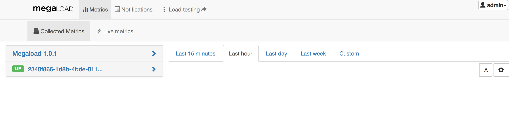
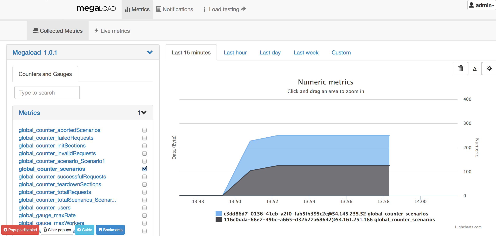
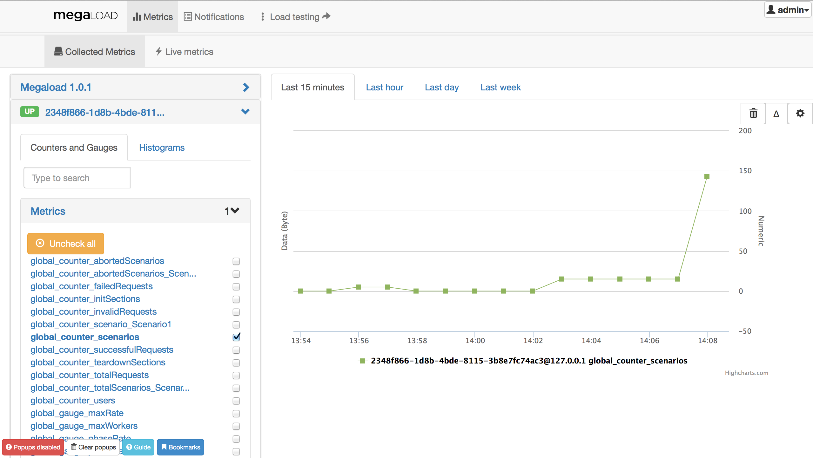
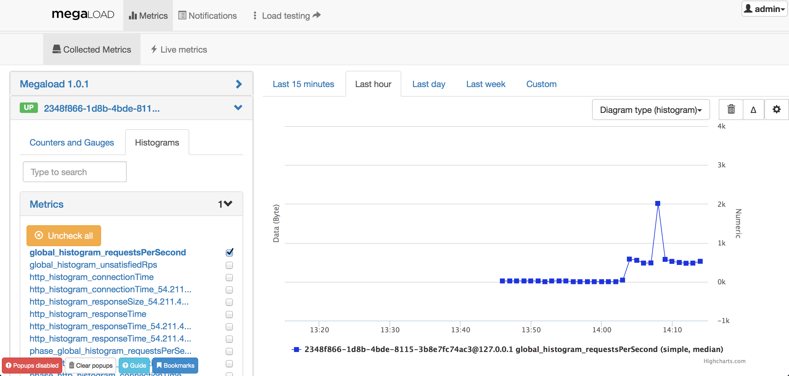
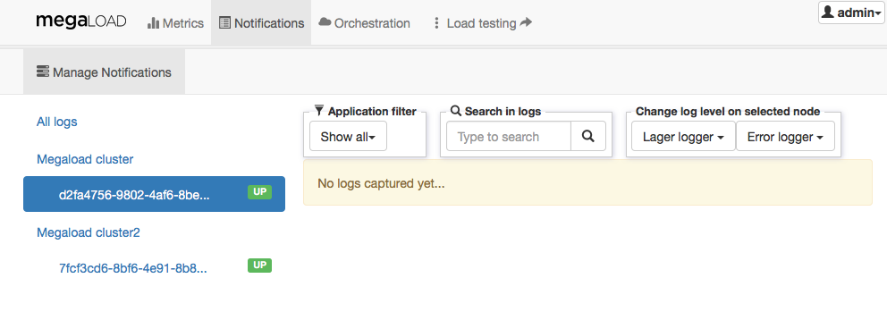
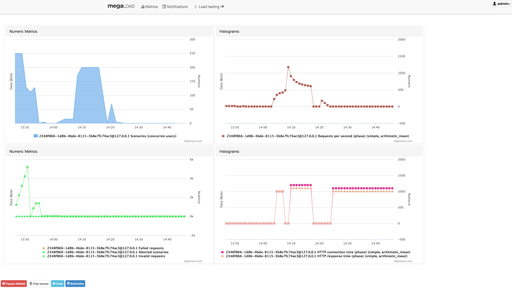

Monitoring the load generators and tests
The Monitoring dashboard provides all the real-time metrics under http://<EC2_Instance_Public_DNS>:8080/#/metrics. You can also view log entries and get an overview of important metrics.
Real-time metrics
To view metrics, click Metrics in the top menu bar. The Collected Metrics tab displays the load generator and its load engines on the left.

-
The load generator, Megaload 1.0.1 aggregates the counters from all the load engines, displaying metrics such as the number of scenarios or sucessful requests for the whole system. Click the name to display the drop-down menu with the full list of available metrics. For example, select global_counter_scenarios and check the concurrent users. The next images shows a custom deployment with two load engines.

-
Below the load generator are all the load engines that have been deployed. Select one of them to display the drop-down menu containing counters and histograms. For example, select Counters and Gauges and check the concurrent scenarios for that node.

-
Histograms provide information about response times, connection times or requests per second on each of the individual load engines. All these measurements and their units are described in detail in the Counters section.

Notifications
View log entries from the different load engines. The logs are provided by two different components: error_logger and lager. You can filter by application, search in logs, and change the log level for individual load engines.
Notifications are useful for troubleshooting purposes, but do not provide information about sucessful load tests.

Overview page
When you open Monitoring you see an overview page, which you can customise by adding panels that show metrics or histograms. You can also reorganise the page by dragging the panels to different positions.

Viewing the overview page
To go to the overview page, click Megaload on the left in the menu bar.
Adding a panel
- Click admin in the upper right corner, and then select Profile management.
- Under Dashboard preferences, click Add panels.
- On the Configure panel form, select the Overview panel type and Node family, and then select or fill in the corresponding options that are shown.
- Click Create overview panel.
Editing, resizing, or removing a panel
- Click admin in the upper right corner, and then select Profile management.
- Under Dashboard preferences, click on a panel’s title bar to show a set of controls, and choose the appropriate option:
 |
Change the panel’s configuration (opens Configure panel) |
 |
Increase the panel's width |
| Decrease the panel's width | |
 |
Remove the panel |
Resetting the overview page
To remove your customisations, click admin in the upper right corner, and then select Clear dashboard cache.